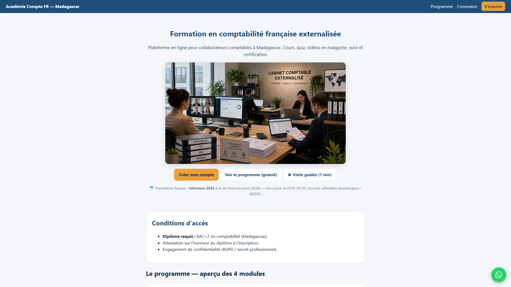
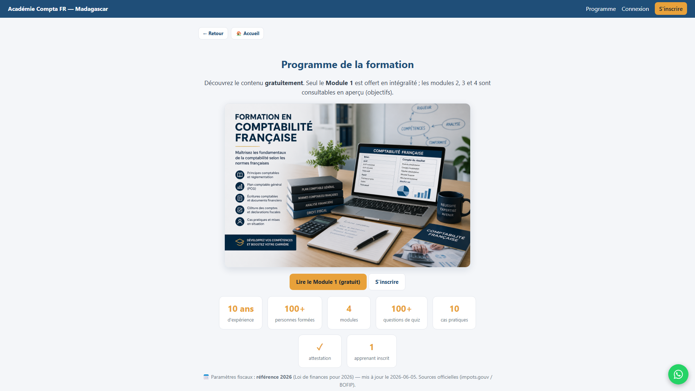
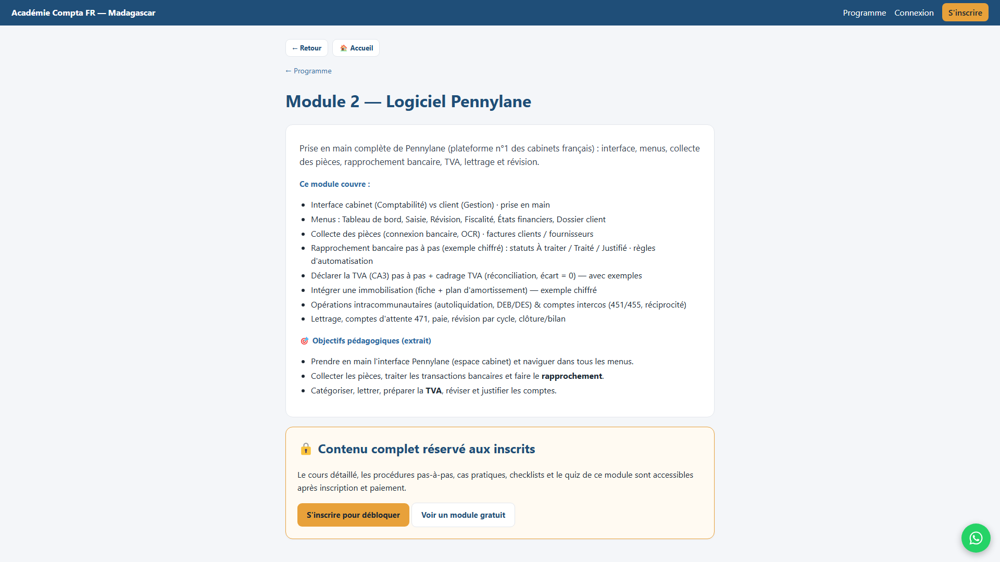
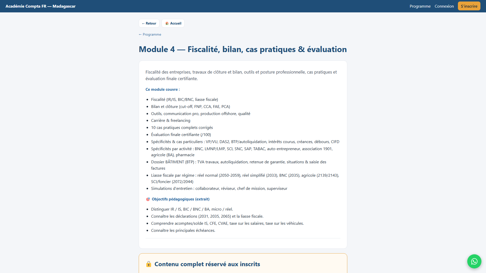
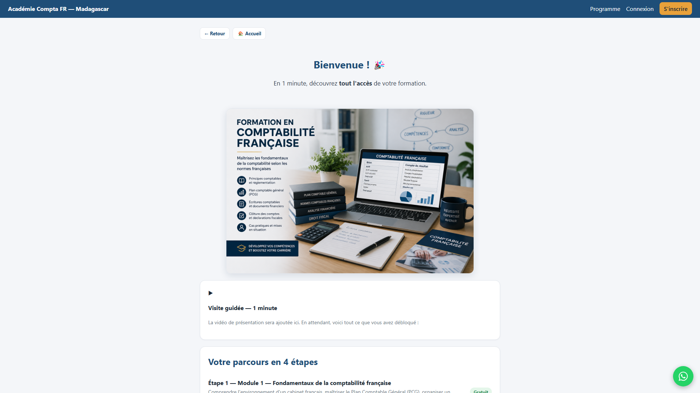
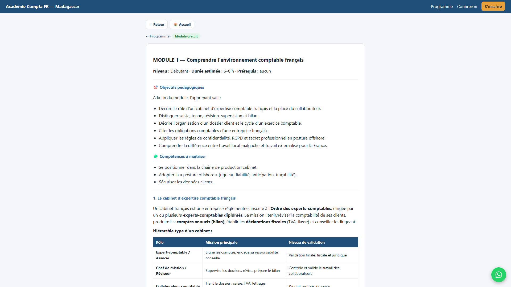

Mode d'emploi : 1) Copiez le script. 2) Pictory/Fliki/CapCut → collez (6 scènes). 3) Mettez les images dans l'ordre. 4) Voix FR + sous-titres + le nom academiecomptafr.mg en gros sur les 2 dernières scènes → Export (format 9:16 pour TikTok/Reels/Statut WhatsApp).

Accroche + nom du site : « comptable à Madagascar… dossiers français ? Découvrez Académie Compta FR. »

Contenu complet : 4 modules, 24 leçons.

Pennylane + CERFA + TVA.

Liasse par régime, cas pratiques, simulations d'entretien.

Quiz, suivi, accès sécurisé, attestation, Module 1 gratuit.

CTA final + nom du site EN GROS : academiecomptafr.mg